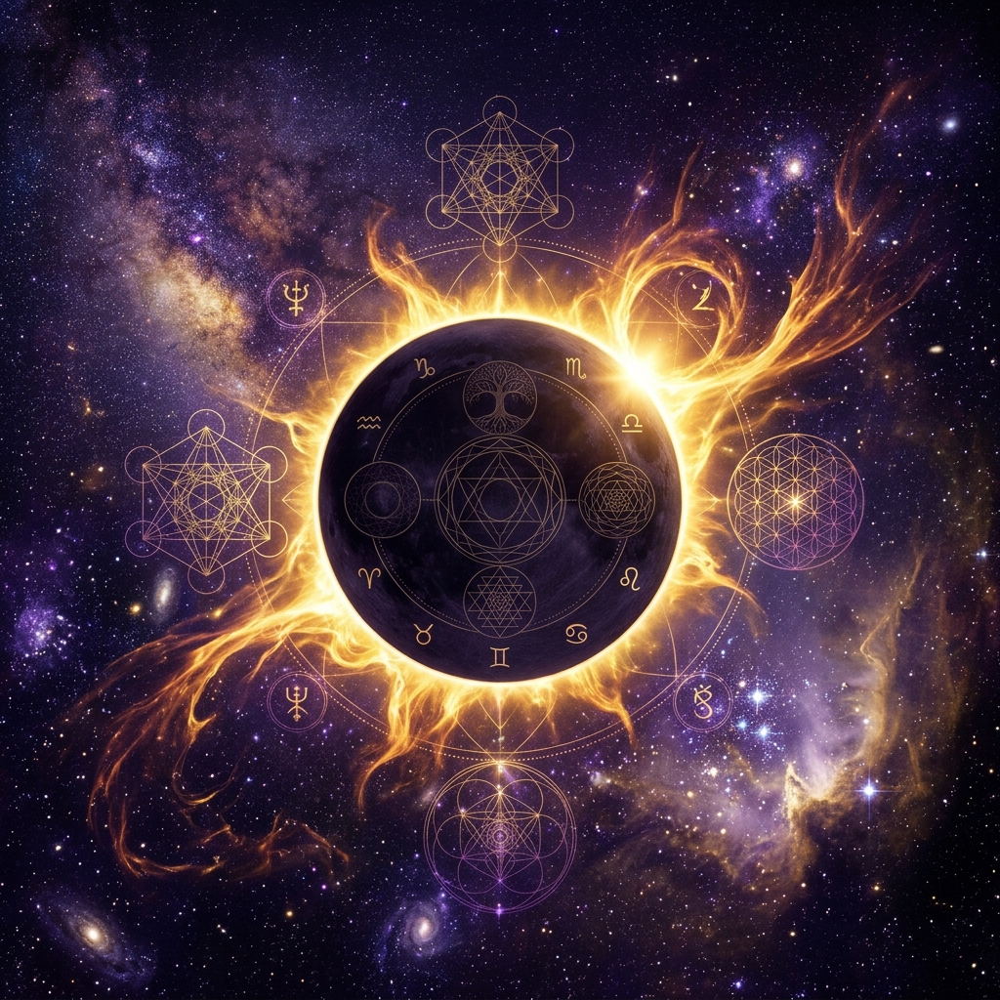
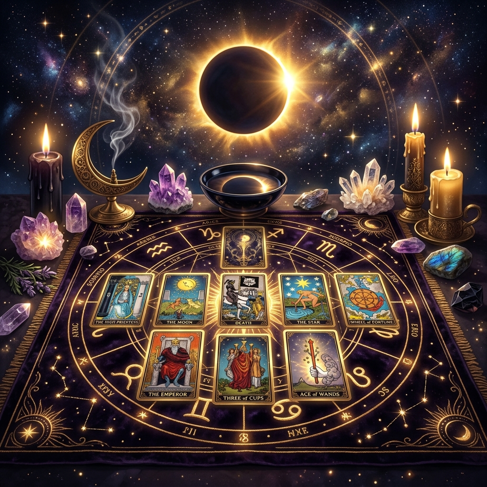

Los eclipses de Sol son, sin lugar a dudas, los eventos astronómicos, esotéricos y astrológicos más imponentes, magnéticos y transformadores de todo el firmamento. Desde la más remota antigüedad, el instante preciso en que la Luna se interpone directamente entre la Tierra y el Sol —ocultando momentáneamente el fulgor del astro rey en pleno día— ha sido contemplado por diversas civilizaciones con sagrado temor, fascinación profunda y, sobre todo, como un portal cósmico de reseteo e ineludible transmutación.

En el terreno de la astrología evolutiva y la filosofía del Tarot, un eclipse solar jamás debe interpretarse como una desgracia o una condena funesta. Por el contrario, representa una aceleración brusca e ineludible del destino. La luz radiante del Sol (que simboliza el Ego consciente, la mente lógica, la voluntad terrenal y la máscara cotidiana) queda eclipsada momentáneamente por la sombra del cuerpo lunar (que encarna el subconsciente más profundo, la memoria de las almas, las aguas emocionales y las verdades ocultas). Durante unos valiosos instantes, el universo apaga el ruido externo para obligarnos a mirar de frente nuestra propia verdad y reorientar el rumbo de nuestra vida.
1. La Dinámica Astrológica: Los Nodos Lunares y el Eje del Destino
Para comprender por qué un eclipse solar es infinitamente más trascendental y conmovedor que una Luna Nueva convencional, es imprescindible analizar su vínculo directo con los Nodos Lunares de la Luna (Nodo Norte y Nodo Sur):
- Un Reseteo del Karma Colectivo e Individual: Un eclipse solar solo puede manifestarse cuando la conjunción del Sol y la Luna ocurre en el mismo grado matemático o muy cerca de uno de los Nodos Lunares. El Nodo Norte representa nuestro futuro evolutivo, el destino al que estamos llamados a avanzar y las virtudes que debemos integrar a pesar del miedo; mientras que el Nodo Sur encarna el pasado, la zona de confort aprendida, las lecciones ya superadas y el karma que debemos soltar definitivamente.
- La Diferencia entre Eclipses de Nodo Norte y Nodo Sur: Cuando el eclipse solar ocurre en el Nodo Norte, el universo nos empuja con fuerza hacia oportunidades inéditas, puertas que se abren de forma inesperada y llamados vocacionales. Cuando ocurre en el Nodo Sur, se manifiesta como una purga acelerada: relaciones, empleos o patrones de pensamiento que ya no sirven a nuestra evolución se disuelven para dejar espacio a lo nuevo.
- Impacto en tu Carta Natal (Tránsito por Casas Astrológicas): La casa astrológica de tu mapa natal donde cae el grado exacto del eclipse solar sufrirá un proceso de reseteo y siembra que durará entre 6 meses y 2 años. Por ejemplo:
- Casas I / VII: Grandes giros en tu identidad personal, tu cuerpo o en tus contratos y relaciones de pareja.
- Casas II / VIII: Transmutación de tu economía, finanzas compartidas, autovaloración y gestión del poder personal.
- Casas III / IX: Nuevos horizontes intelectuales, estudios superiores, viajes trascendentes y cambios de filosofía de vida.
- Casas IV / X: Reestructuración del hogar, la familia, las raíces emocionales y la proyección profesional o estatus público.
- Casas V / XI: Despertar de proyectos creativos, fertilidad, círculos de amistades y visión del futuro colectivo.
- Casas VI / XII: Cambios en tus hábitos de salud física, rutina laboral cotidiana y sanación del inconsciente profundo.
✦ Sabiduría Astral en Tiempo Real: Si deseas conocer en qué fase se encuentra la Luna en este instante y cuál es su tránsito actual por las constelaciones, recuerda que puedes consultar nuestra sección interactiva de La Luna y su Energía.
2. Efectos Energéticos, Físicos y Emocionales en las Personas
Durante la denominada "temporada de eclipses" (que abarca habitualmente las dos semanas previas y las dos semanas posteriores al alineamiento), el campo electromagnético de la Tierra y nuestra propia estructura sutil experimentan variaciones de gran intensidad. Es muy común registrar una serie de síntomas físicos y psicológicos característicos:
A) El "Efecto Dominó" y la Aceleración Temporal
Los eclipses actúan como catalizadores de acontecimientos. Situaciones, conversaciones o proyectos que llevaban meses o incluso años estancados en la indecisión suelen precipitarse de golpe en cuestión de días. Aparecen revelaciones que hacen imposible seguir fingiendo ignorancia. Lo que se cae durante un eclipse solar ya había muerto internamente; el evento astronómico simplemente retira el velo.
B) Manifestaciones Físicas y Emocionales Frecuentes
- Fatiga Intensa o Espasmos de Hiperactividad: El sistema nervioso asimila la gran descarga electromagnética. Es vital respetar los descansos, reducir el consumo de estimulantes y beber abundante agua mineral.
- Migrañas y Presión Ocular: Asociadas a la resistencia mental ante los cambios inminentes que el alma ya percibe.
- Sueños Vívidos y Premonitorios: Al apagarse la luz del Sol, la barrera del inconsciente se vuelve porosa. Los sueños nocturnos traen mensajes directos de guías o del propio subconsciente. Puedes analizar los símbolos de tus visiones en nuestro Diccionario de Sueños.
- Necesidad Imperiosa de Limpieza: Un impulso irrefrenable de hacer espacio en armarios, eliminar archivos digitales obsoletos o distanciarte de entornos cargados.
3. Eclipses de Sol y la Lectura del Tarot: Desmitificando el Oráculo
Existe una antigua creencia popular que desaconseja consultar las cartas del Tarot durante los eclipses por miedo a "energías oscuras". Desde la óptica del Tarot evolutivo, esta idea es completamente errónea: el eclipse no altera ni corrompe el mazo; al contrario, **magnifica la potencia reveladora del oráculo** y abre una ventana directa hacia el trabajo de sombra (*Shadow Work*).

Sin embargo, al ser una etapa de alta volatilidad energética, no es recomendable hacer preguntas predictivas ansiosas sobre decisiones ajenas. El Tarot durante un eclipse debe utilizarse como una linterna de autoindagación para alinearte con el nuevo ciclo.
Tirada Mística del Eclipse Solar (5 Cartas de Transmutación)
Te proponemos esta tirada especial de 5 arcanos para realizar durante la ventana del eclipse, ya sea con tu baraja de Tarot o en nuestro tapete digital:
| POSICIÓN | CONCEPTO Y PREGUNTA CLAVE |
|---|---|
| Carta 1 | El Sol Eclipsado: ¿Qué aspecto de mi Ego, orgullo o control consciente debo pausar y entregar al universo? |
| Carta 2 | La Sombra Revelada: ¿Qué verdad reprimida o temor inconsciente sale hoy a la luz para ser sanado? |
| Carta 3 | El Nodo del Destino: ¿Hacia qué dirección evolutiva me empuja el cosmos en los próximos 6 meses? |
| Carta 4 | El Anclaje de la Virtud: ¿Qué fortaleza íntima o don debo cultivar para mantener la paz mental durante la transición? |
| Carta 5 | El Nuevo Amanecer: ¿Qué bendición o fruto inesperado florecerá una vez que se disipe la penumbra? |
🔮 Pon a prueba la tirada en directo: Tómate un instante para concentrarte, respira profundo y realiza tu consulta en El Oráculo del Destino para recibir tu interpretación completa.
4. Guía Práctica de Alquimia Espiritual: Qué Hacer y Qué Evitar
En el esoterismo clásico se enseña que la energía de un eclipse solar es de **purga, corte y reordenamiento**, no de manifestación o carga pasiva. Por ello, conviene seguir una serie de pautas éticas y de higiene energética:
| ✨ QUÉ SÍ HACER | 🚫 QUÉ EVITAR |
|---|---|
|
• Meditar en silencio y practicar la observación serena. • Sahumar tu espacio con Palo Santo, Salvia o Romero para limpiar el aire estancado. • Tomar baños de sal marina o sales de Epsom para descargar la electricidad estática del cuerpo. • Escribir tus pensamientos en un diario sin juzgarte. • Agradecer las etapas que llegan a su fin natural. |
• NO cargues tus cristales o cuarzos bajo la luz del eclipse (la energía es caótica y puede desprogramarlos). • NO prepares "Agua de Luna o Sol" durante el eclipse. • Evita discusiones dramáticas o tomar decisiones impulsivas e irreversibles durante el pico del evento. • No intentes retener por la fuerza a personas o situaciones que se están alejando. |
5. Ritual Recomendado de Sahumado y Purificación Aura
Durante la ventana de un eclipse solar, el mejor ritual es la **simplificación y purificación**. Te proponemos este ejercicio de sahumado de 4 pasos:
- Enciende un ramillete de Salvia Blanca o madera de Palo Santo con cerillas de madera hasta que emita un humo denso y aromático.
- Limpia tu cuerpo sutil: Pasa el humo a unos centímetros de tu cuerpo, comenzando desde los pies hasta la coronilla, visualizando cómo la densidad energética se disuelve.
- Recita el Mantra de Rendición: Mentalmente o en voz alta, di: “Suelto el control del Ego y confío en la sabiduría del universo. Que la luz vuelva a mí en perfecta armonía.”
- Permanece en silencio durante 10 minutos sintiendo el latido de tu corazón y la quietud de tu mente.
Conclusión: La Luz Siempre Renace
Un eclipse de Sol es la lección magistral más hermosa que nos regala el firmamento: nos demuestra de forma tajante que la oscuridad es solo una sombra pasajera. La Luna tapa momentáneamente al Sol únicamente para recordarnos que, tras la penumbra, la luz renace renovada, más viva y más brillante que nunca.
Confía en los giros que este ciclo astral traiga a tu vida. Suelta lo que deba irse, abraza la verdad de tu alma y camina con la certeza de que las estrellas siempre guían tus pasos hacia tu verdadero destino.